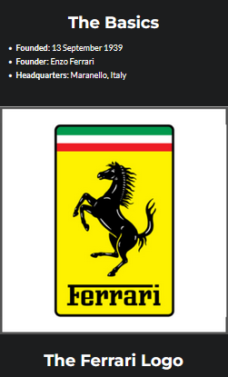

Forged from a racing heritage, Enzo Ferrari wasn’t initially interested in building road cars. When he created Scuderia Ferrari in 1929, he just wanted to buy existing cars and build them into race cars. He wanted to build a stable of fast cars, which is the literal translation of his company: “Ferrari’s Stable” or “Team Ferrari”. His start in life as a racing driver for Alfa Romeo drove his passion for building fast, record-breaking cars that will withstand the test of time. After branching out of Alfa Romeo to build his own legacy, his drive and hustle to beat his former boss laid the foundation to the Ferrari that we all know and cherish today. His guidance built the definition of what we now know as ‘supercars’ and has given the world great examples of supercar. His legacy lives on through his cars, but let us not forget his beginnings. Ferrari’s philosophy “building the greatest cars in the world.” So it is fitting when you think of awesome sports cars, one brand immediately comes to mind and that is Ferrari. Everything about Ferrari cars is great, unique and recognizable. Performance is amazing and they are constantly dragging the automotive industry into the future. For many decades Ferrari has been one of the top motor car brands. The short list of greatest Ferrari road cars isn’t a short list at all. Ferrari has an uncanny ability to produce some of the best sports and road cars in history. So here are the top 10 Ferraris of the past 6 decades, noting that we include the current Ferrari 458 Italia and LaFerrari in the list too. The 250 GTO may be considered the first in the line of Ferrari supercars and it was a gem. They haven’t looked back. The Dino was the first mid-engined Ferrari and while down on power, it looked gorgeous and this layout would go on to be used in most Ferraris. The 288 GTO and 599 GTO were crazy models based on existing models. The F40 is still considered by most the be the best supercar ever, the Enzo was the defining moment celebrating Ferrari’s awesome F1 run in the late 1990s


Avarage Price
$200,000-$400,000 model model model model
model model model modelThe top 10 automobile companies in the world are expected to grow exponentially owing to recovery
of the economy around the world coupled with increased demand from developing economies like
India, China, Brazil, and Malaysia. The global automobile market was valued at around
$1,400 billion in 2017 and is estimated to expand at a CAGR of more 3% for the next five
years to surpass $1,650 billion by the end of 2022. The top 10 car companies in the world are
geared to step up their production capacities as it is forecasted that the sales volume of
passenger cars will grow significantly from the 78 million units in 2017 to cross past the
100 million units mark within the next few years